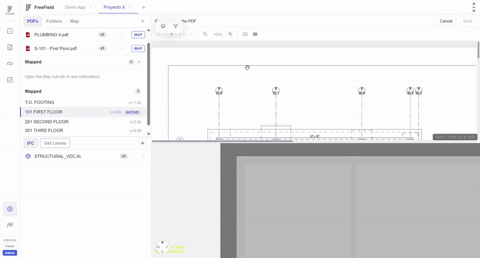
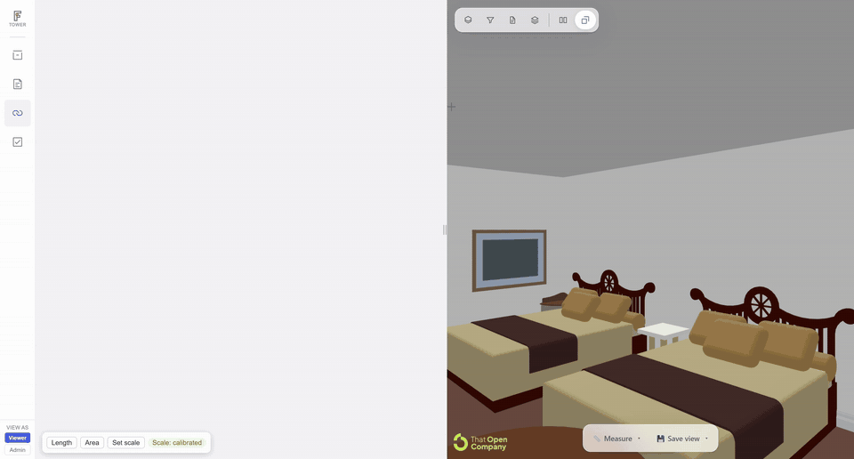
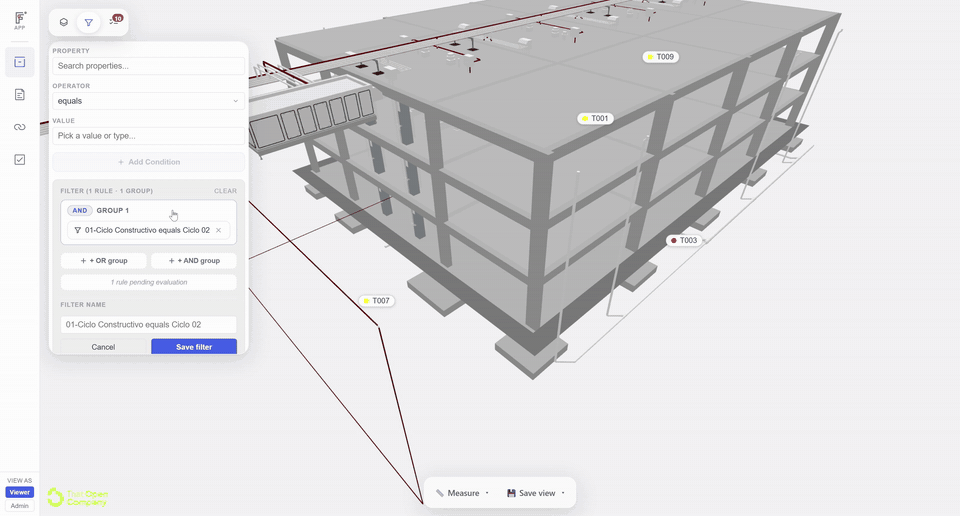
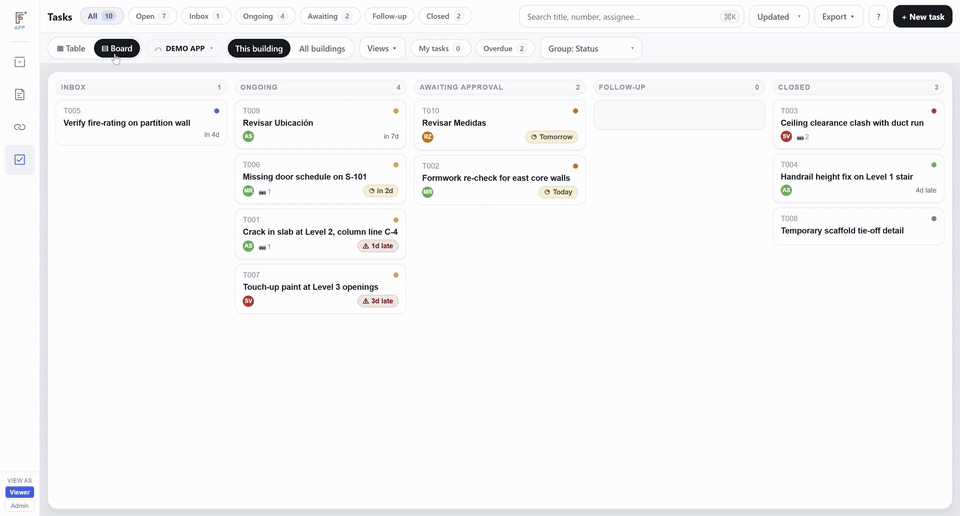

This page is the single source of product context for building the FreeField launch landing page. It contains the verified pitch kit, the confirmed feature set (with footage), repository map, brand assets, and hard constraints. Read it fully before designing.
Monorepo (web core) This repo (free-field-app)Your BIM model is smart — the field shouldn't work from a dumbed-down copy.
“Your BIM model is smart — the field gets a flat PDF that's already stale. The only fix you're sold is locked modules per seat, your data in their cloud, on their release calendar. FreeField ends both: sovereign field BIM — open source and self-hosted — the real model on web and tablet, plan and 3D side by side, tasks pinned to geometry, offline included. A native Android app and a Revit exporter ship in the same open repos. No seats, no lock-in, your data stays yours. Your team or an AI coding agent adapts it to how you build. Own your tool, not a license.”
There's nothing to buy — everything is MIT, and the only cost is your own hosting.
Every capability is a package you can open and change — web core, Android app, and Revit exporter all ship open. The fix your crew needs next isn't a support ticket in someone else's backlog — it's a change scoped to one package, extended on your schedule. Extend it yourself or point an AI coding agent at it; the whole community can too.
Proof: ff-* TypeScript packages, Capacitor Android app, and the Revit exporter are all MIT/public.
The Revit bundle exporter carries model and drawings straight out of Revit; the web app ingests IFC and plan PDFs, calibrates plan alongside eye-level 3D, and pins tasks to exact geometry — so crews act on the coordinated model, not a flattened copy drifting from the source of truth. Runs in any browser on any device, with a native Android app for the field.
Proof: Revit bundle exporter + IFC/plan-PDF ingest + plan↔3D calibration + tasks pinned to 3D/plan positions — all free, all public.
MIT-licensed, self-hosted, zero seats — equipping the whole field crew, including the durable-offline Android app, costs engineering time you control, not a per-user bill that scales against your margins. Projects and tasks sync to infrastructure you run, and models live on your devices — so your data stays on your side of the wall.
Proof: MIT across all repos; self-hosted sync (tasks only, models on-device); demo mode with zero backend; offline Android with crash recovery and low-RAM tuning.
For mid-size GCs and self-performing specialty contractors with a BIM/VDC function, FreeField is sovereign field BIM — an open-source, self-hosted field-BIM layer, MIT end to end: web app, native Android tablet app with durable offline, and Revit exporter. It puts the coordinated model in the field with tasks pinned to exact locations, working offline. You adapt it to your stack and way of working — nobody sells you anything, nothing is paywalled — instead of closed proprietary platforms that force your processes into their roadmap and per-seat licensing.
Every item below was verified frame-by-frame against demo recordings on 2026-11-22. Do not claim anything beyond this list.
.ffbundle (or IFC + PDFs) directly in the browser; no backend required for the core flow.VITE_FF_DEMO_AUTH=true runs the whole app with zero backend.app.freefield.field, minSdk 26 / target 35) — “FreeField Field”..frag models + photo/note BlobStore (not a browser cache)..ffbundle folder (e.g. 28 sheets / 13 levels / est. 38.3 MB on the Snowdon Towers sample).@thatopen/components + @thatopen/fragments (That Open Engine), three.js, web-ifc (WASM served locally). PDFs: pdfjs-dist.packages/ff-telemetry + deployment runbook ship — pilot metrics are instrumentable today.| Repo | What it is | Status |
|---|---|---|
| free-field-monorepo | Web core: Settings, Models, LinkView, Documents, Tasks, Users + ff-* packages. MIT. | Public |
| free-field-app | Landing/OSS repo (this site lives here). | Public |
| free-field-android | Native Android app (“FreeField Field”), Capacitor 7. | public · MIT |
| free-field-revit-exporter-app | Revit add-in, “Export Bundle” → .ffbundle. | public · MIT |
Screen recordings live in the shared Google Drive → “Free Field” folder (recorded 2026-11-22 unless noted). Host them (or trimmed cuts) before embedding; the filenames below are the source of truth.
| File | Shows | Use for |
|---|---|---|
Revit Exporter refined.mp4 (2 min, 720p) | Full Revit → .ffbundle round-trip | Hero / “From Revit” section — launch-ready as-is |
Revit Exporter Raw.mp4 (10.7 min) | Same, uncut | Backup footage for cuts |
1-2 Smart sheets Docs module.mp4 (2:16) | Bundle load, 3D model + properties, multi-page PDF viewer with outline | Documents section |
1-2 Smart sheets Linked views.mp4 (1:07) | LinkView: plan ↔ eye-height 3D, mapped-PDF picker, opacity slider | LinkView section — the money shot |
PDF Compare functionality.mp4 (1:10) | Revision diff: side-by-side/overlay/changes, change list, CSV/PNG export | “See what changed” differentiator |
0-Config … 4-Task Module.mp4 (Nov 14 batch) | Module-by-module walkthroughs | Feature tour |
FreeField-lanzamiento-ES.mp4 | Spanish launch cut | ES market |
Existing web-core GIFs already in this repo (docs/media/): settings-calibration, models-filters, models-isolate-section, linkview-walk, linkview-overlap, documents-measure, tasks-board, banner.png.




FreeField is MIT-licensed modular TypeScript, end to end: web app, Capacitor Android app, and Revit bundle exporter — all public. Ingest IFC and plan PDFs, calibrate plan to 3D, pin tasks to geometry; models stay on-device, syncing only tasks to your self-hosted backend. Durable offline on Android with crash recovery and low-RAM tuning. Your VDC team or an AI agent extends any package on your schedule. No seats.
FreeField turns the BIM model you already have into a real field tool — on web and on a native tablet app that works offline, all free and open source. Your foreman pins tasks to the actual model, not a flat PDF. No per-seat fees, no locked modules; your data and roadmap stay in your hands. There's nothing to buy — the only cost is your own hosting. Not headcount.
FreeField is sovereign field BIM — open source, self-hosted, no seats, MIT end to end. Clone the web app: load IFC and plan PDFs, calibrate plan to storey side-by-side with eye-level 3D, pin tasks to geometry. The Capacitor Android app adds durable offline models on field tablets; the Revit bundle exporter carries model + drawings out of Revit. Modular ff-* TypeScript packages on That Open Engine; sync is tasks-only. Extend it with your team or an AI coding agent.
| Objection | Honest answer |
|---|---|
| “It's early — rough edges.” | Yes, young project; what it does (model in the field, plan↔3D calibrated, tasks pinned, offline capture) is built and e2e-tested today. Back every claim with a live demo. |
| “No iOS?” | Web runs in any browser including iPad; native app is Android — deliberate, matching cheap rugged field tablets. iOS is roadmap; qualify honestly up front. |
| “Self-hosting is a burden.” | You run it on infrastructure you already control — your cloud bill, not per-seat rent. Demo mode runs with zero backend; deployment docs included. |
| “Will our models survive?” | Web: models are a device cache — source files always re-ingestable. Android app: durable offline storage for models, photos, notes. |
| “It's free — what's the catch?” | No catch, no company selling anything. Your costs: your hosting and your engineering time. Trade-off: no support SLA — you own the roadmap, backed by an open community. |
| “What do we pay for?” | Nothing. No services business, no premium tier. Only your own infrastructure. |
| “Revit round-trip, out of the box?” | Yes — the exporter ships free in a public repo: model + drawings out of Revit into FreeField's format. No paid connector, no per-seat gate. |
| “Offline on the tablet?” | Two honest layers: web queues field capture offline (models are a cache); the Android app gives durable offline storage with crash recovery. Say which layer you're showing. |
Free field Logo 2.jpg, Free Field Logo.jfif — in the shared Drive “Free Field” folder (extract a clean SVG/PNG for the site).docs/media/banner.png in this repo.Instrumented via ff-telemetry — no invented numbers, only criteria: